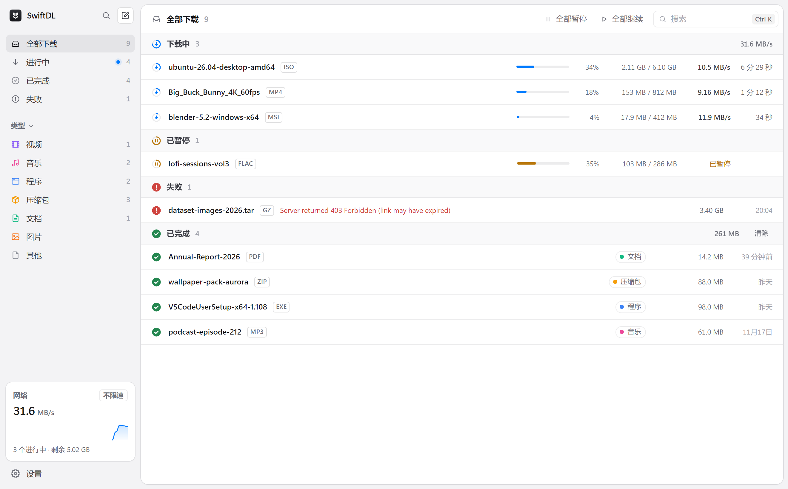

你的网络很快。
下载也该这么快。
SwiftDL 把每个文件拆到多条连接上同时下载，任何中断都能接着来，还能接管浏览器的下载。
免费开源 · v0.2.0 · Windows、macOS 和 Linux

一个文件，多条连接。
每一段都在同时下载。
服务器常常限制单条连接的速度。SwiftDL 最多同时开 32 条连接；某条提前完成时，会接手剩余最大分段的一半，所以临近结束也不会有连接闲着。
最多 32 条连接
每个文件用多少连接由你决定。对大多数服务器来说，8 条是个不错的起点。
智能拆分
提前完成的连接会接手剩余最大分段的一半。
无需合并
文件一开始就按完整大小预留，每条连接直接写入其中。
在浏览器里点下载。
剩下的交给 SwiftDL。
扩展随应用一起提供。它会把每个下载连同你的 Cookie 交给 SwiftDL，所以需要登录的文件也能下；随后一个小窗口会询问保存位置。
登录状态一起带过来
Cookie 和来源页随每个下载一起传递，私有链接也能用。
下载视频
播放器上方的按钮会列出页面加载的视频和音频文件。
不打扰你
按住 Alt 让浏览器处理某个链接，也可以对单个网站关闭。
随时暂停。
一点不丢。
SwiftDL 每秒保存一次剩余待下载的内容。Wi-Fi 断开、合上笔记本，甚至程序崩溃：它都会从停下之处继续。
每秒保存
崩溃后最多只会重新下载一秒的数据。
队列与限速
设置同时下载的数量，并限制总带宽。
默认就整齐
文件分别放入视频、音乐、程序、压缩包和文档文件夹。
细节也认真做。
命令面板
按 Ctrl K 查找任意下载或执行任意操作。
每个下载一个窗口
每个文件都有实时进度，完成后给出带“打开”和“在文件夹中显示”的摘要。
常驻托盘
关闭窗口后下载继续进行。
注重隐私
没有账号、统计或遥测，只连接你正在下载的服务器。
浅色与深色
跟随系统，支持 Windows、macOS 和 Linux。
开源
MIT 许可证，用 Rust 构建。可以阅读、修改、再发布。
获取 SwiftDL。
Windows、macOS 和 Linux 免费。
解答。
真的会更快吗？
如果服务器限制了单条连接的速度（很多服务器都会），那么是的，大约能快上连接数的倍数。如果单条连接已经跑满你的宽带，更多连接也不会凭空变出带宽，但续传和队列仍然有用。
能下载 YouTube 的视频吗？
可以，也支持 Vimeo、X、Reddit 等视频网站。点击播放器上的视频按钮，选择清晰度，从 4K 到仅音频。SwiftDL 对这类网站使用 yt-dlp，并在第一次需要时自动装好。
为什么 Windows 或 macOS 安装时会警告？
安装包还没有代码签名。Windows 上点“更多信息”，再点“仍要运行”。macOS 上右键点击应用并选择“打开”。
SwiftDL 会收集数据吗？
不会。没有账号、统计或遥测，只连接你正在下载的服务器。
真的免费吗？
是的。SwiftDL 采用 MIT 许可证，代码就在 GitHub 上。